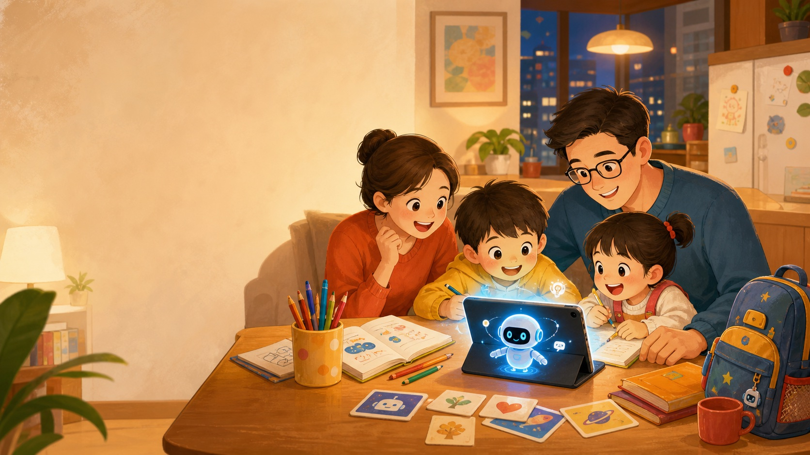
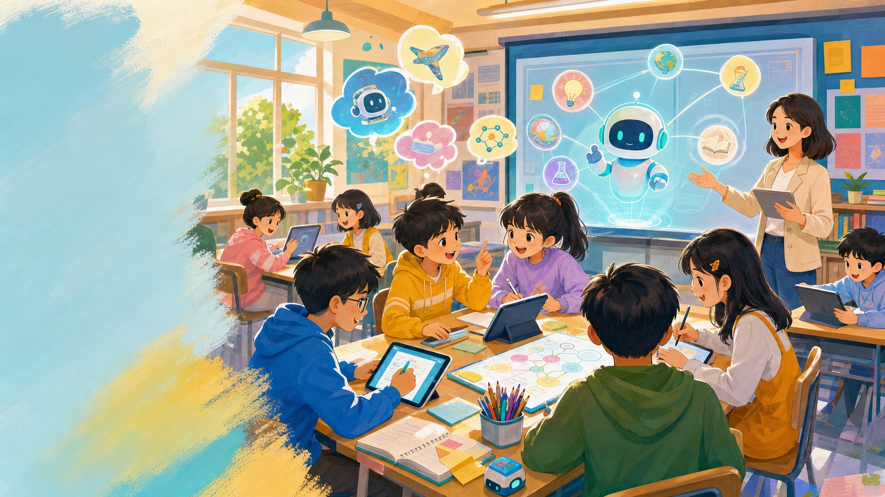
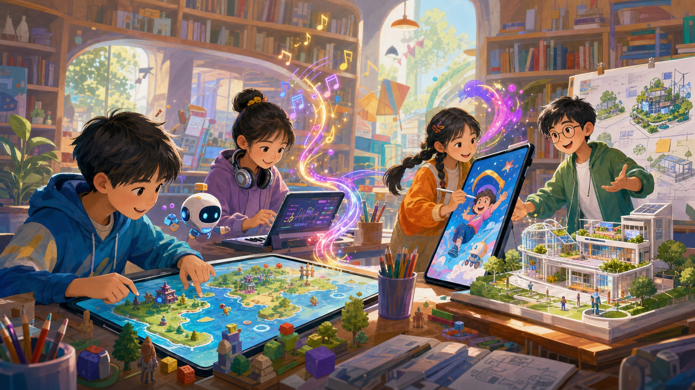
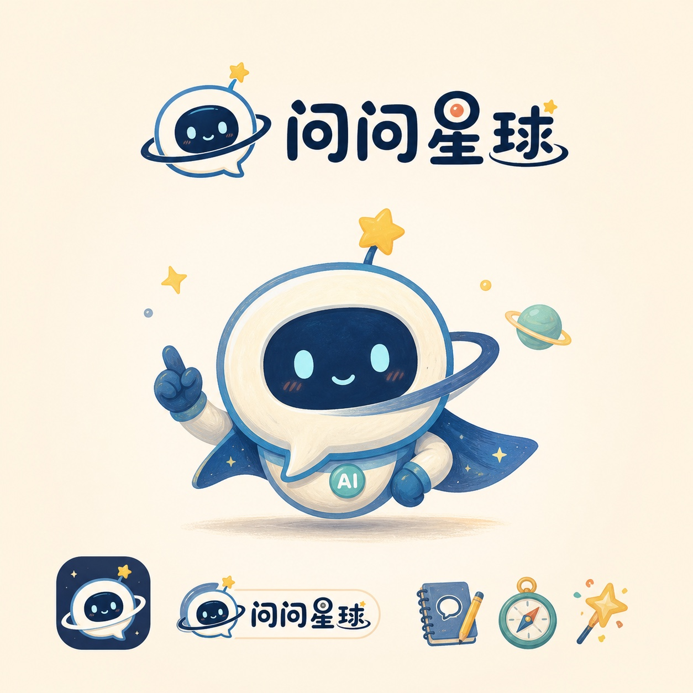
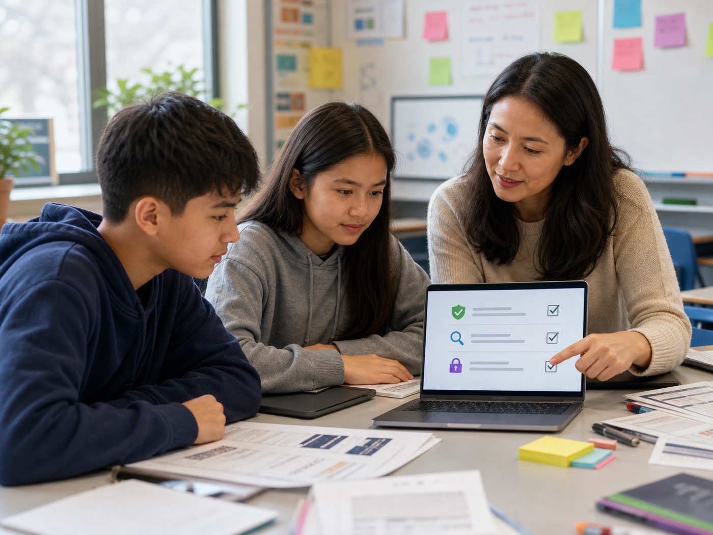

8-15岁孩子
16课完整闭环
100%大陆可访问工具优先
1套家庭 AI 成长路线
课程世界观
欢迎来到「问问星球」
孩子不是来寻找标准答案，而是跟着星球向导“问问”完成一连串真实任务：提问、验证、创作、展示，再把 AI 变成家庭共同成长的工具。

Logo / IP
问问，一个专门陪孩子提好问题的 AI 星球向导
视觉系统升级为明亮蓝绿、太阳黄和珊瑚橙的“探索星球”配色，保留纸感插画的温暖，同时让页面更有童趣、节奏和行动感。
AI时代认知建立
解决家长焦虑与孩子陌生感，理解 AI 和未来世界。
AI真实生活场景
学习、英语、作业、绘画、视频、音乐、游戏都变成可操作任务。
AI时代核心能力
练提问、判断、创造、协作，避免只会“点按钮”。
AI安全与未来
识别诈骗、换脸和信息风险，建立未来学校与职业想象。
插画场景
每个孩子都能代入的真实任务
课程视觉从真实照片改为更适合儿童课程的插画化表达，保留家庭、课堂、创作、项目和安全五类使用场景。
家庭共学
家长不再只盯结果，而是和孩子一起看过程。
学习助手
AI 讲思路、出练习、帮复盘，不替孩子完成作业。
创造力工坊
歌曲、海报、动画、游戏都能变成孩子自己的作品。

安全判断
学会识别 AI 诈骗、换脸、隐私和不可靠信息。
课程地图
16 节课，每课一个互动小游戏
点击任意课程会进入独立课堂页面：左侧是可翻页互动 PPT，右侧是本课小游戏、提示词模板和家庭任务。
中国可用工具
工具不是主角，真实可用才是门槛
课程优先使用中国大陆可直接访问的工具，并在每课标注适用场景。实际开课前建议再做一次可用性复查。
豆包、DeepSeek、腾讯元宝、通义千问、Kimi
即梦AI、通义万相、美图AI、可灵AI、Seedance
天工AI、豆包、蛋仔派对、迷你世界
星野、猫箱，以及家庭边界卡
家庭规则
不是禁止 AI，而是建立边界
孩子要能说清楚：我先做了什么，AI 帮了哪一步，我最后如何判断和修改。
解释知识、整理思路、启发创作、检查错误。
直接抄答案、上传隐私、伪装原创、让 AI 替自己思考。
先自己想，再问 AI；能说出过程；家长和孩子一起制定规则。